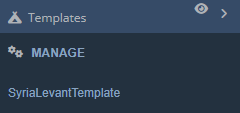

Templates
Work in progress
Templates:

All you’re likely to see when you start off is the above; the category botton and a Manage button. You can add Template categories, and they will also get added to the Interface category dropdown menu, like so:

Hit manage and let’s take a look at the main window:
Like most other windows in the DCSWE, there’s a search function and tabs. Notice the ‘New Tab’ button as well as the ‘Import’ button. The ‘New Tab’ button creates a new Template Category which you can add templates to. ‘Import’ directly imports a Template Category to your DCSWE.
Create Template
To make a template, you first need to create a template category. Press the ‘+’ button either up in the tabs or the ‘+ New Tab’ button. You will now see a template category in the list on the ‘Manage’ tab.
Press ‘Rename’ to name the category. You will now see it in your tabs. Click on your newly created category:
You will see the above. From here, you can Shift + LClick drag to select entities. Then enter a name and description and click ‘Add Template’ to create a template. You can have multiple templates in the same category.
Place Template
To place a template that you’ve created or imported, LClick and drag one of the template icons in the window onto the map.
Update/Delete Template
To update a template, select it in the window. Select the new units and press ‘Update’.
To delete a template, select it in the tab and press ‘Delete.’
Import Templates
First you’ll need to download templates that you wish to import. Head to the DCS Web Editor Dicord and download your desired template from the ‘template-sharing’ channel. Templates are provided as a .json file. Press Import in the ‘Manage’ tab on the Web Editor Template window, then select the .json file you downloaded. Your imported templates should now be in a new tab.
Delete Category
To delete a category, head back to the ‘Manage’ tab. Press ‘Delete’ next to category you wish to delete.